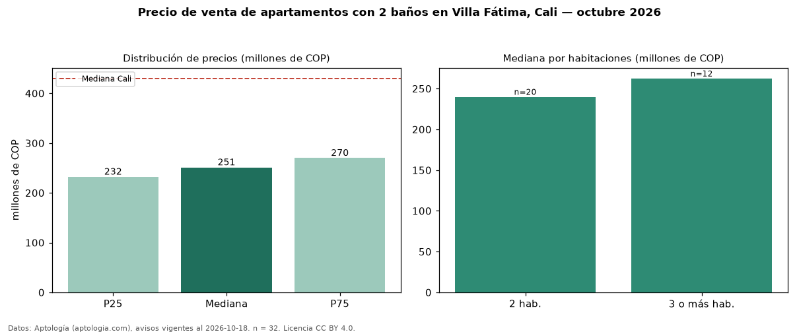

Precio de venta de apartamentos con 2 baños en Villa Fátima, Cali — octubre 2026
Con 32 avisos vigentes, el precio mediano de apartamentos con 2 baños en venta en Villa Fátima, Cali es COP 251 millones. Eso es 5 % más que la mediana de todos los apartamentos en venta de Villa Fátima (COP 239 millones, n = 41); este segmento reúne el 78 % de esos avisos. Por metro cuadrado, la mediana es COP 4,16 millones/m² (n = 32), 0 % por debajo del conjunto de referencia (COP 4,17 millones/m²). El área mediana anunciada es 60 m². El segmento con más oferta es el de 2 habitaciones (20 avisos, mediana COP 240 millones); pasar de 2 habitaciones a 3 o más habitaciones cambia la mediana +9 %. La administración mediana declarada es COP 230.000 al mes (n = 25). El estrato más frecuente es 4 (78 % de los avisos con estrato). La mediana de todos los apartamentos en venta de Cali es COP 430 millones (−42 % de diferencia). Datos: Aptología (aptologia.com), CC BY 4.0 — https://www.aptologia.com/venta/cali/villa-fatima. Archivos: PDF, CSV con las cifras y gráfica PNG.

| Avisos únicos | 32 |
|---|---|
| Percentil 25 | COP 232.250.000 |
| Mediana | COP 251.100.000 |
| Percentil 75 | COP 270.000.000 |
| Mediana por m² | COP 4.162.698 |
Fuente: avisos vigentes de portales inmobiliarios recopilados por Aptología, deduplicados (mínimo 30 avisos únicos por celda). Precios pedidos, no cerrados. Fecha: 2026-10-18.